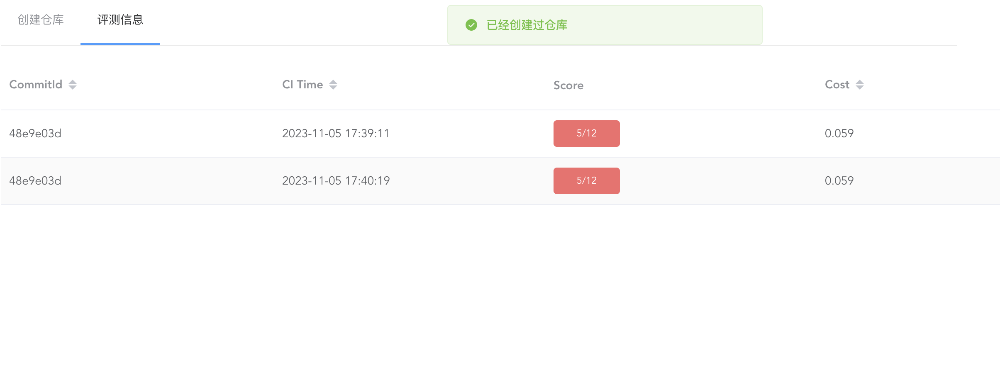

平台说明
我们会将分组DDL设在退课第一阶段结束后不久，分组DDL后开放仓库创建，每个组有一个仓库。注意如果你们分组已经非常明确，则完全可以在那之前开始完成实验，分发仓库后再将代码全部放入其中即可。
仓库创建通过教学实验平台 UniLab Platform 完成，分组信息导入完成后助教会发公告说明，通过该平台的指引可以创建仓库/获取权限。注意对多人小组来说，第一位操作的同学通过该平台会创建仓库并获得权限，后续同学也需要通过该平台获取仓库的权限。
由于测例中有必做内容也有选做内容，且测例之间可能存在明显的依赖关系，因此你可以通过设置相关 flag 变量的方法来约束 CI 进行的测试，从而使得你在完成部分测试时也能看到 CI 通过的✔️标志，同时也能有效避免无效的 CI 时间。关于 flag 的具体使用说明你可以在测例仓库的 README 中查看。
为了方便大家快速获知测例基本信息，下面放了一个用 Mermaid 绘制的流程图来表示测例依赖关系及其他元信息。每一个框代表一个测例，每个框中的第一行是测例名以及小括号内的分值，如果该测例需要满足 flag 才能开启则会第二行小括号内用逗号隔开的若干个 flag。注意，你必须通过了全部必做部分的测例后，才能开始完成选做测例（为此设置了一个名为 optional 的 0 分测例作为区分）。
测例分值
简便起见，每个测例只有拿0分和拿满分两个情况，我们已经尽可能将测例进行拆散以便于大家得分。
下面是必做部分的测例：
flowchart RL
system["system(5)"]
table["table(7)"]
index-data["index-data(8)\n(index)"]
data["data(0)\n(data)"]
table-data["table-data(2)\n(data)"]
query-a["query-a(3)\n(query)"]
query-b["query-b(3)\n(query)"]
query-c["query-c(3)\n(query)"]
query-d["query-d(3)\n(query)"]
query-data-a["query-data-a(3)\n(query)"]
query-data-b["query-data-b(3)\n(query)"]
join-data["join-data(3)\n(join)"]
join["join(3)\n(join)"]
comb-pk["comb-pk(2)\n(comb,pk)"]
pk["pk(2)\n(pk)"]
comb-fk["comb-fk(2)\n(comb,fk)"]
fk["fk(2)\n(fk)"]
comb-fk-schema["comb-fk-schema(1)\n(fk,comb)"]
comb-pk-schema["comb-pk-schema(1)\n(pk,comb)"]
fk-schema["fk-schema(1)\n(fk)"]
pk-schema["pk-schema(1)\n(pk)"]
index-schema["index-schema(4)\n(index)"]
table --> system
index-data --> query-data-b
index-data --> index-schema
data --> table-data
table-data --> system
query-a --> table
query-b --> table
query-c --> table
query-d --> table
query-data-a --> data
query-data-b --> data
join-data --> query-data-a
join --> query-a
join --> query-b
comb-pk --> query-a
pk --> query-a
comb-fk --> comb-pk
fk --> pk
comb-fk-schema --> comb-pk-schema
comb-pk-schema --> pk-schema
fk-schema --> pk
pk-schema --> pk
index-schema --> query-data-a
下面是选做部分的测例：
flowchart BT
optional["optional(0)"]
multi-join["multi-join(6)\n(mj)"]
query-aggregate["query-aggregate(2)\n(aggregate)"]
query-fuzzy["query-fuzzy(1)\n(group)"]
query-group["query-group(1)\n(group)"]
query-nest["query-nest(2)\n(nest)"]
query-order["query-order(2)\n(order)"]
date["date(1)\n(date)"]
unique["unique(1)\n(unique)"]
null["null(2)\n(null)"]
multi-join --> optional
query-aggregate --> optional
query-fuzzy --> optional
query-group --> optional
query-nest --> optional
query-order --> optional
date --> optional
unique --> optional
null --> optional
开发顺序
尽管实验文档是按照从下而上的顺序编写的，但是这个顺序可能并不符合敏捷开发的工程实践，相比之下你或许会希望快速完成整个框架，逐步通过部分测试以渐渐增长测试分数，这种情况下你也可以依据测例的依赖关系来决定你的功能实现顺序。
关于 dbs-testcase 的具体用法见该仓库的 README.md，强烈推荐你在本地进行测试完成后再运行CI，CI仅用作上传分数。
在你通过（部分或全部） CI 测例后，你可以在 CI 输出中看到自己的分数。我们通过 UniLab Platform 进行了分数汇总，这里会保留你的最高成绩作为最终成绩，你可以前往平台查看。
Unilab Web 页面